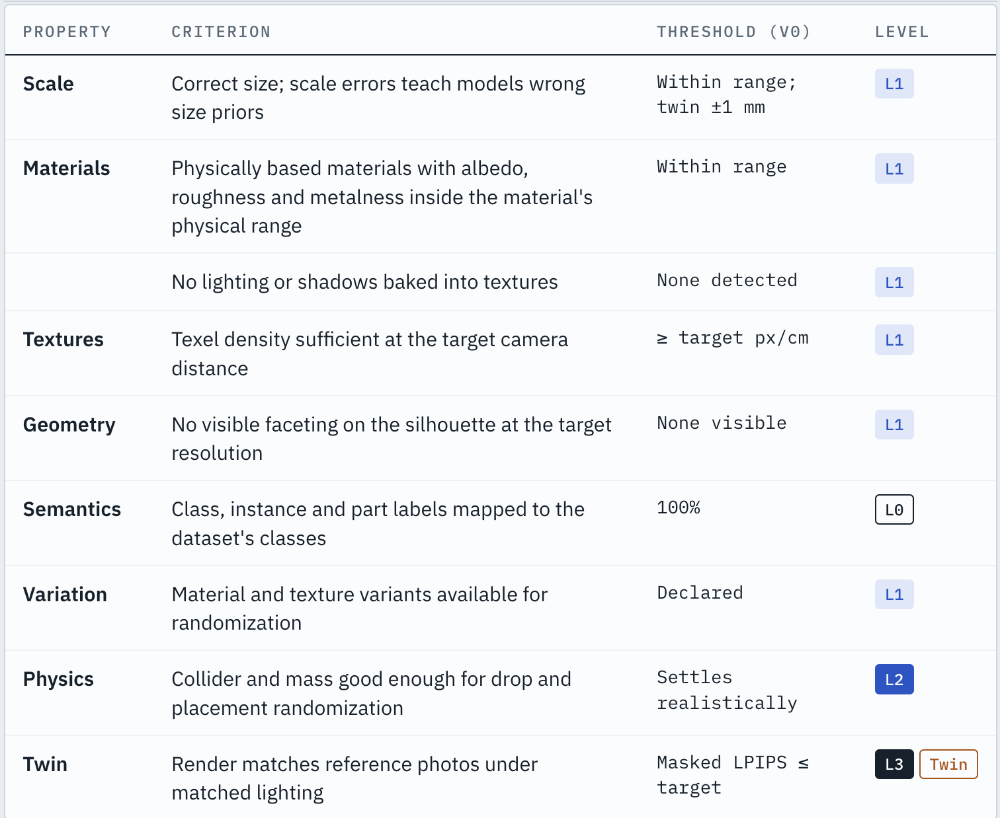
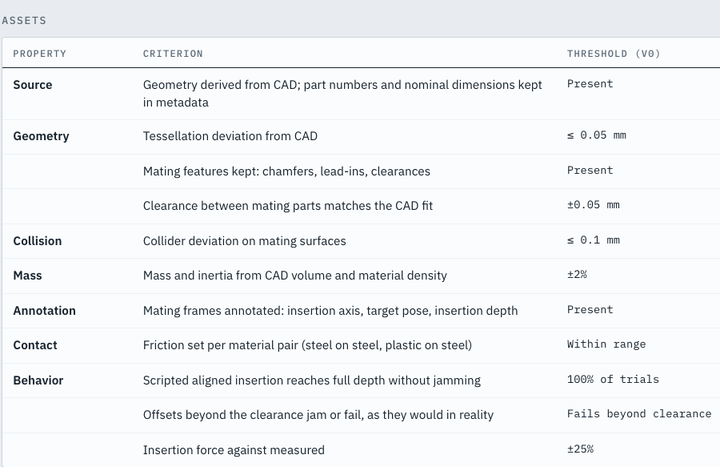
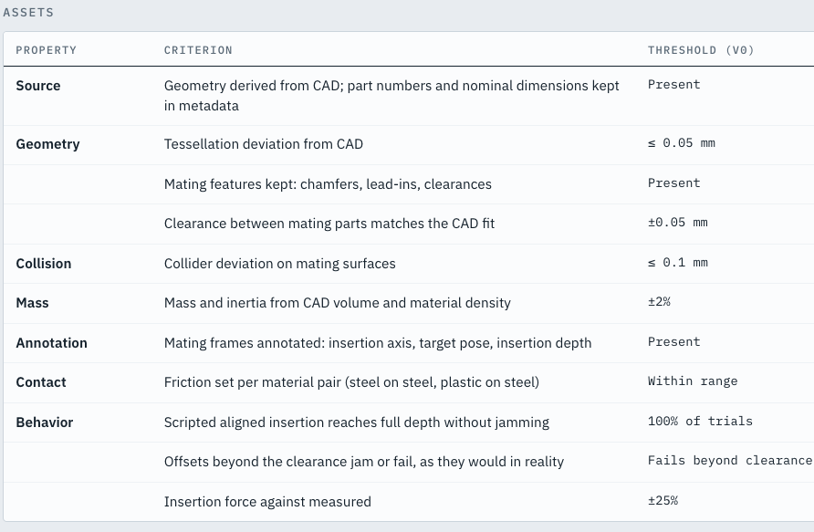
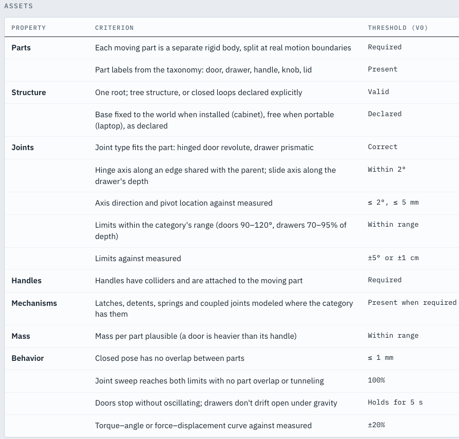
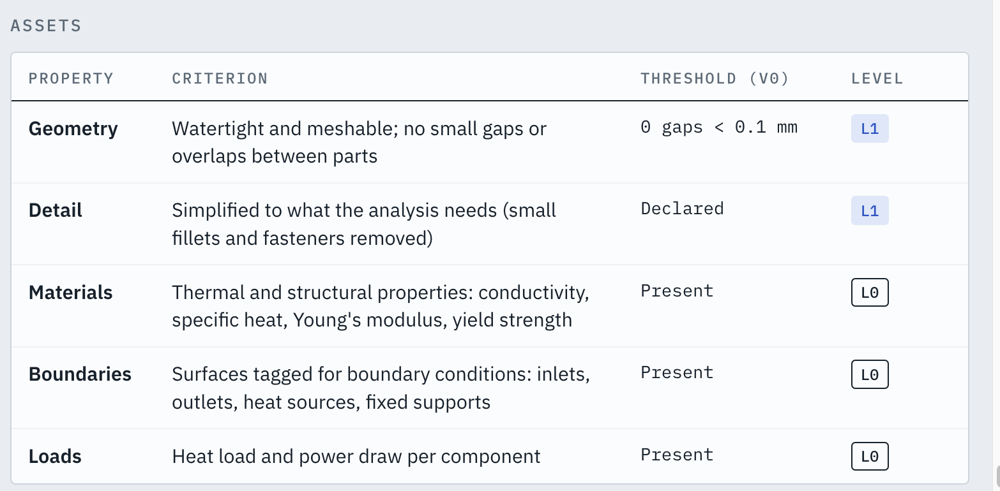
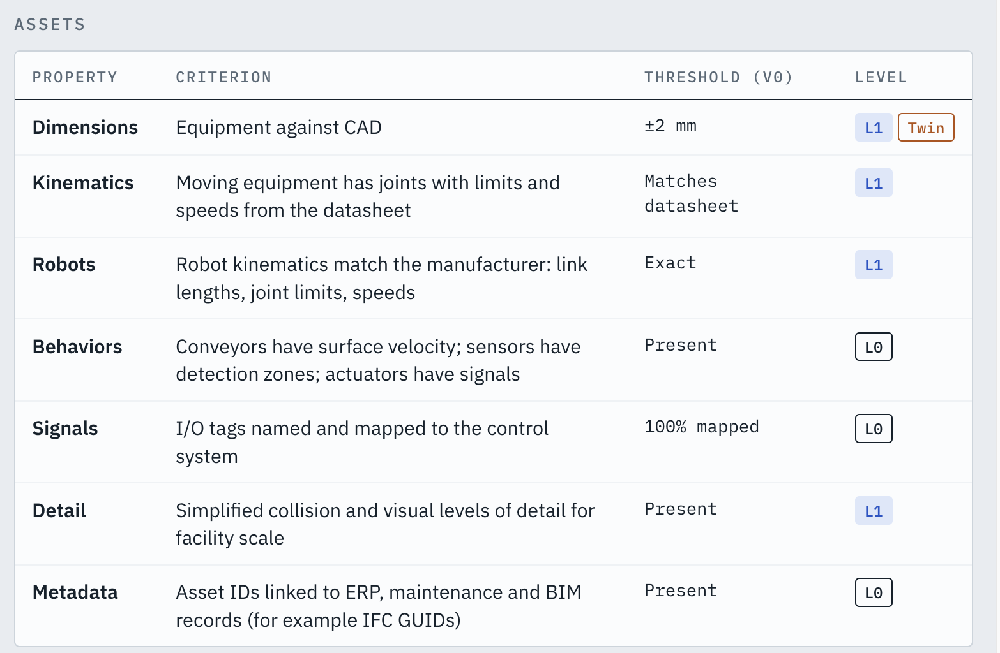

Benchmarking strategy
Answers ecosystem partners’ question on what’s the definition of good.
Use benchmark/validation to drive content authoring.
Benchmarks should be composable based on how the assets be used
Skills to pair with benchmarks to better guide frontier models on generation, reaching one shot success
Tiers
Atomic, priority below
- Physics
- Geometry (mesh)
- Joint
- Material & Texture
E2e pairs with tasks, composable and selectable by agents
E2E reaches an asset that’s good enough for perception models
Target solvers: RTX (real-time and path-traced) · Unreal · Blender Cycles · Neural renderers

Additional use cases in addition to perception
Robotics:
PhysX 5 · Newton (MuJoCo Warp)
Rigid body manipulation, example use cases
- Pick and place
- Bin picking
- Packing and kitting
- Dexterous in-hand manipulation
- Tool use

Precision assembly, example use cases
- Peg and connector insertion
- Fastening
- Gear meshing
- Kitting into fixtures

Articulated interaction, example use cases
- Doors and Drawers
- Appliances
- Valves, knobs and levers
- Laptops and lids

DSX (Engineering multi-physics)
Target solvers: OpenFOAM · Ansys · Abaqus · COMSOL · Simcenter STAR-CCM+ · PhysicsNeMo surrogates
- Thermal and airflow
- Structural analysis
- CFD

Industrial twin
PhysX 5 (Isaac Sim) · Commercial (Siemens, Rockwell Emulate3D, Visual Components, AnyLogic, FlexSim) · Robot offline programming tools
